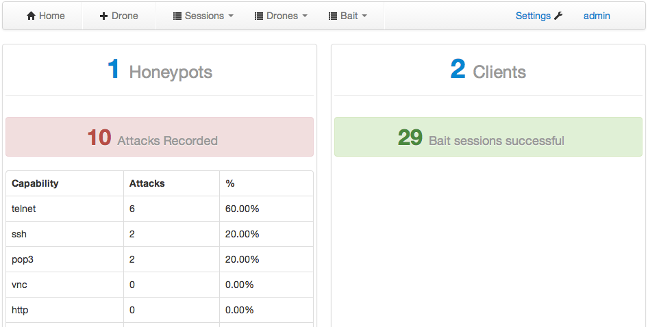

Installing Beeswarm server
Instaling the Beesswarm server is as easy as downloading the package with pip and afterwards starting beeswarm with the --server parameter. Make sure to note the auto generated administrative password:
$ pip install conpot
Downloading/unpacking beeswarm
...
Successfully installed Beeswarm
Cleaning up...
$ mkdir server_workdir
$ cd server-workdir/
$ beeswarm --server
*** Please answer a few configuration options ***
* Communication between drones (honeypots and clients) and server *
* Please make sure that drones can always contact the Beeswarm server using the information that you are about to enter. *
IP or hostname of server: 127.0.0.1
****************************************************************************
Default password for the admin account is: uqbrlsabeqpbwy
****************************************************************************
2014-08-09 11:31:19,874 (beeswarm.server.server) Starting server listening on port 5000
After installation, the managament interface can be reached on port 5000:
Deploying drones
...Authors and Contributors
You can @mention a GitHub username to generate a link to their profile. The resulting <a> element will link to the contributor's GitHub Profile. For example: In 2007, Chris Wanstrath (@defunkt), PJ Hyett (@pjhyett), and Tom Preston-Werner (@mojombo) founded GitHub.